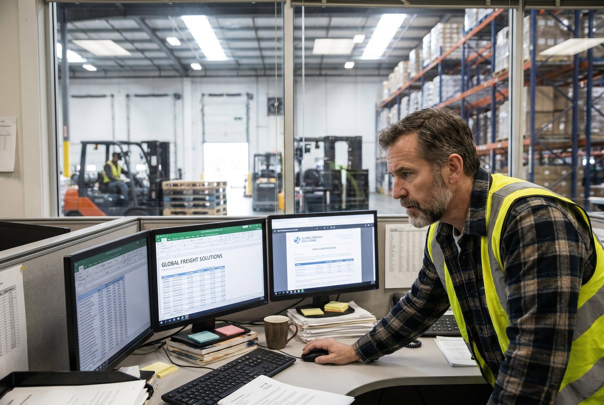

Du sender 150 pakker om dagen. Du betaler 42 kr. per pakke til GLS. Din konkurrent sender 300 pakker om dagen og betaler 27 kr. per pakke. Forskellen er ikke volumen alene. Forskellen er at de har forhandlet. Her er hvad du faktisk kan spare.
Kort svar
👉 Vil du se det i praksis? Kontakt SmartPack
Webshops med 50-500 daglige forsendelser betaler typisk 20-40% mere end nødvendigt på fragt. Tre ting driver det: ingen forhandling, forkert priszoner, og skjulte tillæg der aldrig er stillet spørgsmålestægn ved. En fokuseret forhandlingsrunde tager 2-4 uger og kan spare 150.000-500.000 kr./år ved 150+ daglige ordrer.Hvad du faktisk betaler for - og ikke ved
Fuel surcharge (brændstoftillæg)
Et procenttillæg på al fragt der ændrer sig måned for måned. Typisk 8-18% oven i basisprisen. De færreste webshops bemærker det - det reguleres automatisk og fremgår ofte kun i fakturaens fineprint. Hvad du kan gøre: Forhandl et loft på fuel surcharge (fx max 12%) eller bed om at basisprisen inkluderer fuel.Remote area surcharge
Forsendelse til Bornholm, Færøerne, Grønland og visse postnumre tiltrækker et tillæg på 20-80 kr. per pakke. Har du mange kunder i disse områder, er det værd at kortlægge.Overvægt og overmål
Din aftale dækker pakker under 20 kg og under 120 cm longest side. Over det: dyrt tillæg per pakke. Kortlæg din største 5% pakker - de koster måske 3× mere end du tror.Returnerings-fragt
Hvis du tilbyder gratis retur, betaler du fragmentarisk per retur. Mange fragtaftaler prissætter retur højere end udgående fragt. Forhandl retur-fragt ind i din volumensaftale.Sådan forhandler du
Trin 1: Kør dine tal Du behøver mindst 3 måneders fakturadata med:- Total antal forsendelser per måned
- Gennemsnitlig vægt per pakke
- Geografisk fordeling (hjemlige vs. udland, Bornholm etc.)
- Returandel
Trin 2: Indhent tilbud fra mindst 2 konkurrenter Ring til PostNord, GLS og Bring med samme data. Bed om „samlet årlig omkostning baseret på mit nuværende volumen”. Det er dit forhandlingsudgangspunkt.
Trin 3: Gå til din nuværende leverandør med konkurrenttilbuddet Du behøver ikke skifte. Men du skal have noget at vise. „Jeg har fået et tilbud fra GLS på 29 kr. per pakke. Hvad kan I tilbyde?” Trin 4: Forhandl pakke, ikke bare stykpris Gravering til længere kontraktperiode mod lavere pris. Inkl. retur i volumensaftale. Loft på fuel surcharge. Garanteret responstid ved problemer.Volumensrabatter: Hvad er realistisk?
| Månedsforsendelser | Rabat vs. listeprisen | Sparet per pakke |
| Under 500 | 0-5% | 0-2 kr. |
| 500-2.000 | 5-15% | 2-6 kr. |
| 2.000-10.000 | 15-25% | 6-12 kr. |
| Over 10.000 | 25-40% | 12-20 kr. |
Eksempel: 3.000 forsendelser/måned × 10 kr. besparelse = 30.000 kr./måned = 360.000 kr./år.
Når du bør genforhandle
- Når dit volumen øges med 30%+
- Når din nuværende kontrakt udløber
- Når du ser konkurrenter annoncere med lavere fragttakster
- Minimum: hvert 2. år